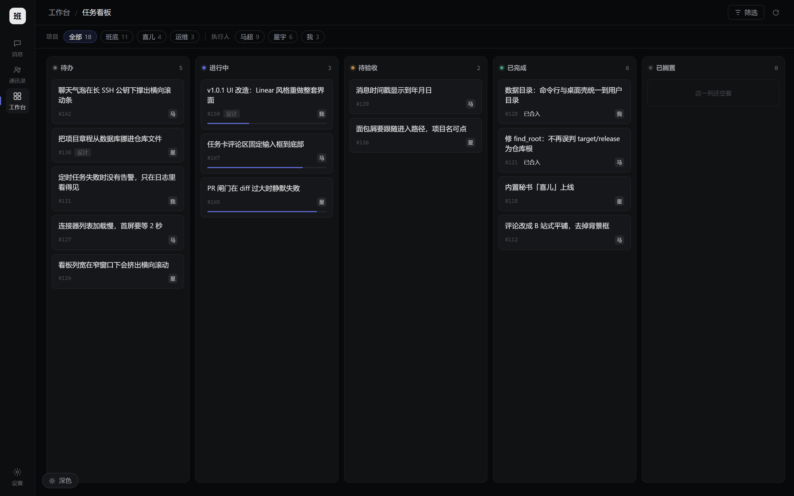

把界面从「能用」
做到「像一件产品」
方向：Linear / Vercel 的极简语汇。颜色几乎全部让给灰阶， 靛蓝紫只出现在三个地方 —— 当前选中、主按钮、焦点环。
看浅色？每张设计稿左下角有「浅色 / 深色」切换按钮。 也可以直接看 深色 / 浅色对照页 → —— 三屏并排、逐项变量对比、对比度实测。
另有 iOS 风版本： Linear 与 iOS 对比 → （消息 · 工作台）
01 消息 · 对话主界面
信息密度最高的一屏。去掉气泡尾巴、统一圆角，时间移到气泡外侧。

气泡去掉尾巴
有尾巴的气泡是很"微信"的语汇。Linear、Notion、Slack 新版都不用尾巴 ——
border-radius 统一 10px，靠底色差区分你我，界面立刻安静下来。
我的话不用实心蓝
原来是 #23406e 的实心蓝块，一屏里出现三次就很吵。
改成 rgba(94,106,210,.14) 的极浅底 + 淡紫边框，文字仍是亮的。
时间在气泡外、与名字同一行
比压在气泡底部更稳 —— 气泡高度随内容变，但"谁·什么时候"这条元信息的位置是固定的， 扫读时眼睛不用重新找。
工具调用做成终端日志
细边框 + 等宽字，像一段真实的执行记录。这是"它真的在干活"的证据， 应该看得见，但不该抢走对话本身的注意力。
02 工作台
原稿是六块彩色磁贴铺满一屏还有大片空白。改成行式条目，一屏读完。

磁贴 → 行式条目
原稿每块磁贴 64×64，六个入口占满一屏、之间全是空的。改成一行一条：
26px 图标 + 名称 + 一句描述 + 右侧计数，全部内容一屏内完成。
四种彩色图标 → 单色线框
蓝、青、橙、紫四种颜色互相打架，红色还会被误读成"出错"。 现在图标默认是中性灰，只有悬停时才染上靛蓝紫 —— 颜色成为交互反馈，而不是装饰。
条目宽度上限 640px
撑满整行会让右侧计数漂到很远的地方，跟左边的名称失去视觉联系。 640 是"名称 + 一句描述"读起来最舒服的上限。
右侧元信息加竖分隔
「进行中 7」这种带标签的计数，用 1px 竖线跟主内容隔开； 纯数字（如「2」）则直接靠右，不加线 —— 有无线本身就在区分信息类型。
03 任务看板
看板最容易犯的错是"每列一个颜色"。这里列头只用 6px 状态点着色。

七列七色 → 一列一点
原稿每列有各自的彩色底和彩条，七列并排像一张 Excel 图表。
现在只有 6px 的状态点着色（外加一圈 16% 透明度的光晕让它"亮"），
列名全是中性灰。
卡片去阴影，靠 1px 边框分层
深色界面上阴影几乎看不见，反而糊成一片。改成
border: 1px solid var(--line-2)，悬停时边框亮一档 + 上浮 1px。
列底板撑满，列内自己滚
align-items: stretch 让短列跟长列等高，一排才像"一排容器"；
卡片多时只滚这一列，不牵动整块板（避免"板里有板"的滚动套娃）。
进度条只在"在跑"的卡上出现
2px 细线，不用进度条控件。待办和已完成不需要它 —— 每条信息只在它有意义的时候出现，是这套设计最重要的纪律。
03.5 项目模块 / 研发面板分工（2026-10-23）
PRD v0.2 三处改动：档案撤「迭代版本数」；插件展示名统一「研发面板」；研发面板只留只读版本清单。

04 设计变量（可直接落到 style.css）
现有 CSS 已经是变量驱动的，改造基本只需要替换这一组值。
| 变量 | 值 | 用途 |
|---|---|---|
--g0 | #08090a | 应用底 / 内容区底 |
--g1 | #0d0e10 | 图标栏 |
--g2 | #111214 | 列表栏 / 看板列底 |
--g3 | #16171a | 气泡 / 卡片 / 输入框 |
--g4 | #1c1e21 | 悬停 / 选中 |
--g5 | #242629 | 图标底 / 标签底 |
--text | #e8e9ea | 主文字（不用纯白） |
--text-2 | #9b9ea3 | 次要文字 / 描述 |
--text-3 | #6b6e73 | 占位 / 时间 / 列名 |
--text-4 | #4a4d51 | 装饰性文字 / 分隔符 |
--accent | #5e6ad2 | 选中指示 / 主按钮 / 焦点环 |
--line-1 | #1a1b1e | 最弱分割线（列表内） |
--line-2 | #202225 | 常态边框 |
--line-3 | #2a2c30 | 强边框（输入、可聚焦） |
#fff 在近黑底上会产生"跳"的感觉 ——
眼睛会不断被正文拽走，长时间读很累。降一档到 #e8e9ea，
再把真正的"最亮"留给悬停和选中态，层次反而更清楚。
05 需要你拍板的几件事
这些我不替你决定 —— 每个都会明显改变产品气质。
定完这四条我就动手改代码
- 浅色主题怎么办？现在的浅色是"白底 + 蓝强调"。同一套设计语言在浅色下要重新定灰阶 （白底上 10 档灰会显得很脏）。我的建议是：浅色只做 6 档灰、继续用 #5E6AD2， 观感比现在更克制。也可以干脆浅色保持现状、只重做深色。
- 侧栏要不要去掉？Linear 和 Vercel 都是单栏 + 顶部导航，而班底现在是 "图标栏 + 列表栏 + 内容区"三栏。三栏更接近 Slack，功能上没问题，但气质偏"传统 IM"。 保留三栏风险最低；想去掉列表栏就得重排信息架构，那是更大的工程。
- 字体要不要换？现在是系统字体栈。欧美工具通常会带一款自己的无衬线 （如 Inter）。引入 Inter 能立刻提升质感，但要打包字体文件（约 100KB）， 与"零依赖"原则不冲突（只是静态资源），需要你确认。
- 动效到什么程度？现在几乎没有过渡。我建议只加三处： 悬停底色 120ms、气泡出现 160ms、看板卡片拖拽时的边框高亮。 不做入场动画、不做渐变光晕 —— 那是 Framer 的语言，不是 Linear 的。
班底 v1.0.1 · 设计稿 · 1440×900 渲染